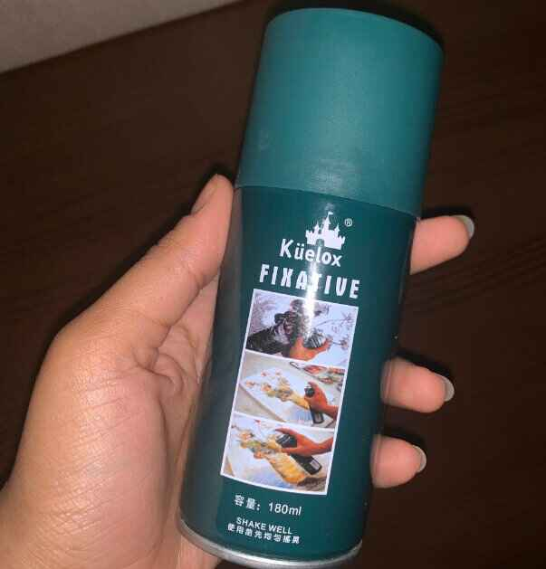
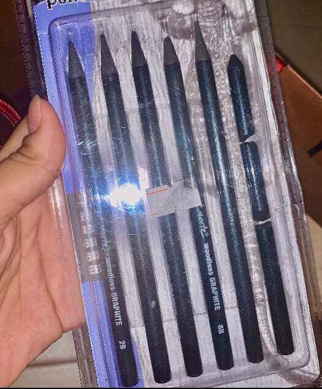
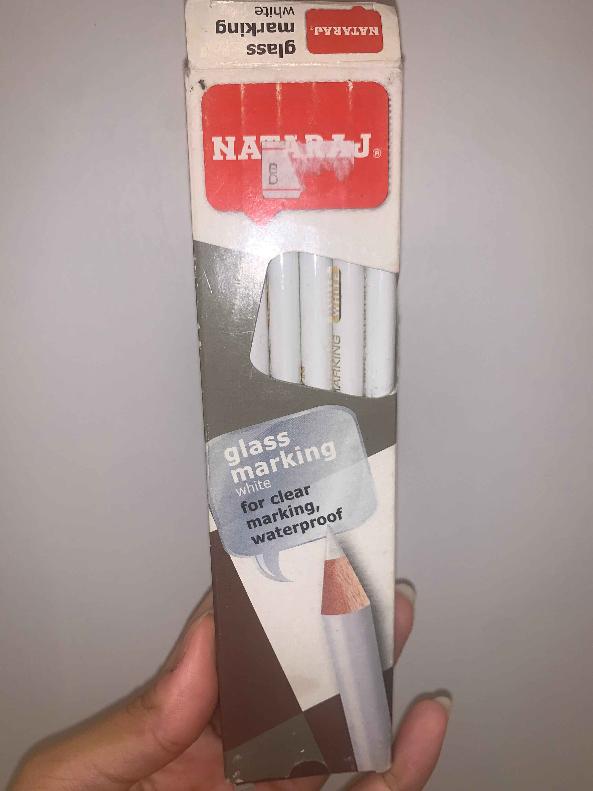
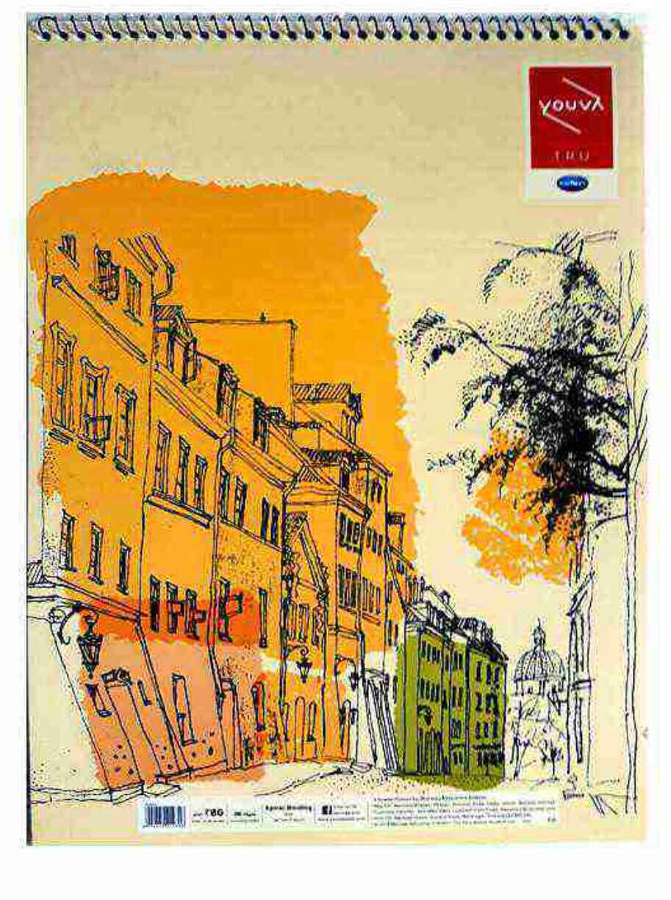

The Tool |
Description |
Approximate Price |
 |
This is a fixative spray from the company Kuelox that keeps the charcoal from smudging, fading, and discoloring. It's like a quick clear dryer that keeps the coal in place and stabilized. That way its easier for me to draw and add layers of coal without worrying about it getting color shifted and ruined. |
2.5BHD |
|
 |
This is a packet containing of different shades of coal pencils which I use in order to produce lighter or darker marks depending on the shade of the pencil. I use these pencils when I want to shade or create a shadow effect on a drawing or give like a grayscale color since these pencils have the ability to blend pretty well. |
3BHD |
|
 |
These white pencils are called glass marking from the company NATARAJ which are used for highliting or clear marking where it gives a drawing like a glossy effect and keep it more realistic as well as these pencils are waterproof and can work on different type of surfaces like ceramic, glossy, plastic, metal, etc. |
5BHD |
.jpg) |
Natural charcoal pencils these pencils are more precise and used by professionals since you can easily control the shade color and thickness you want and it glides softly across the paper. As well as it rubs and smudges easily and can be easily erased that's why most people often used for sketching. |
4BHD |
|
 |
This is an A3 drawing book that I use before drawing the finalized image. Its mostly where I plan out everything that first comes in my mind and sketch it out. |
6BHD |
Done by Hayat AlNoaimi
Contact no. :34456470
Email:
alnoaimihayat@gmail.com